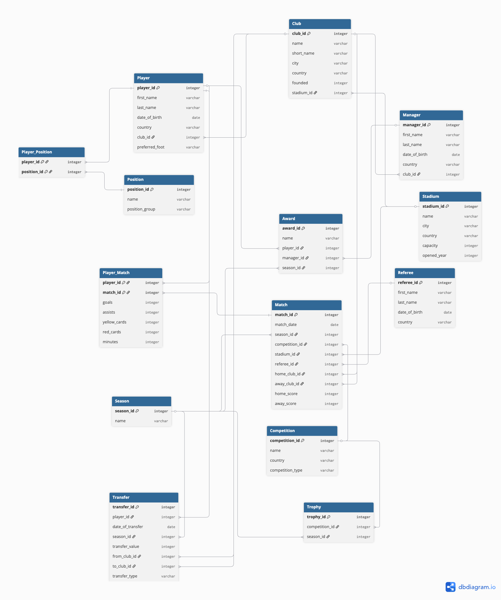
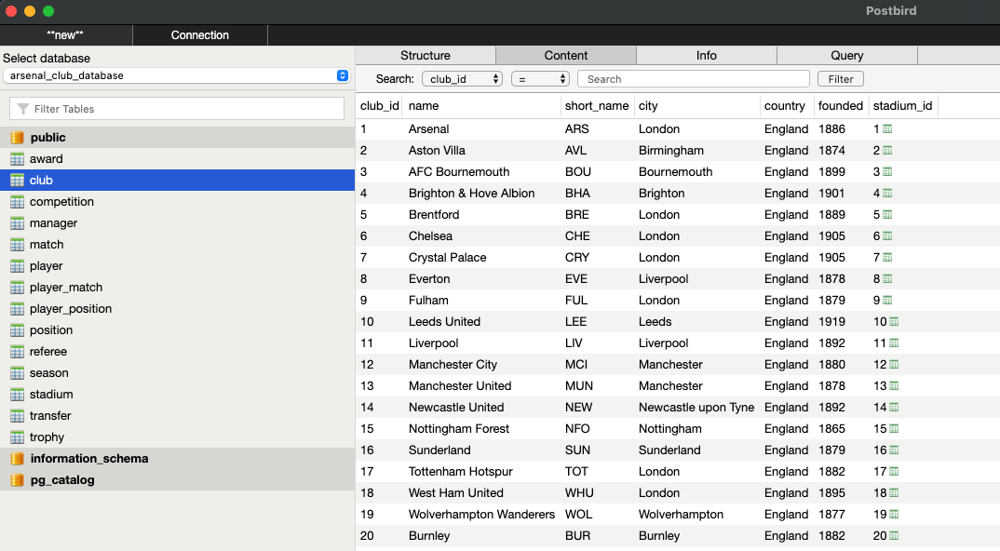

Codecademy Back-End Development Project
Arsenal Club Database
A fully normalised PostgreSQL database modelling a professional football club, designed using relational database principles and populated with realistic football data.

About the Project
As part of the Codecademy Full-Stack Career Path, I was challenged to design and build a relational database from scratch using PostgreSQL. Rather than modelling a fictional business, I wanted to create something based on a subject I genuinely enjoy and could stay engaged with throughout the project.
Football was the obvious choice, and I decided to build a database centred around Arsenal and the wider Premier League. The aim was to design a well-structured database capable of storing information about clubs, players, managers, competitions, matches, transfers and awards while applying the principles of database normalisation and relational design.
Throughout the project I focused on creating a database that was realistic enough to demonstrate practical SQL skills, while deliberately keeping the scope manageable. This meant making considered design decisions about what to include, avoiding unnecessary complexity, and producing a finished project that clearly demonstrates my understanding of relational databases.
The Challenge
The objective was to design a relational database that accurately modelled a professional football club while demonstrating the core principles of database design. From the outset, I wanted the project to feel realistic without becoming unnecessarily complex.
One of the biggest challenges was deciding where to draw the line. Football generates an enormous amount of data, from detailed player statistics and match events to contracts, injuries and scouting information. Rather than attempting to model every possible scenario, I focused on creating a well-balanced database that showcased strong relational design and SQL skills within a manageable scope.
Throughout development I made deliberate decisions about the database structure, normalising tables to reduce redundancy, using junction tables to model many-to-many relationships, and selecting representative seed data that demonstrated the database's capabilities without overwhelming the project.
This approach allowed me to concentrate on building a clean, well-structured database that effectively demonstrates relational modelling, data integrity and practical SQL querying, while remaining true to the objectives of the project.
Planning & Design
Before writing any SQL, I spent time planning the structure of the database. Using dbdiagram.io, I designed an Entity Relationship Diagram (ERD) to define the entities, relationships and constraints that would form the foundation of the project.
Creating the ERD first helped identify the relationships between tables, determine where primary and foreign keys were required, and ensure the database followed normalisation principles before any implementation began.
Key Design Decisions
- Designed a fully normalised relational database consisting of 13 interconnected tables.
- Used primary and foreign keys to maintain referential integrity across the database.
- Implemented junction tables to model many-to-many relationships between players, positions and matches.
- Created representative seed data to demonstrate realistic relationships without unnecessarily increasing the project's complexity.
Building the Database
With the database design complete, I began implementing the schema in PostgreSQL. Each table was created using SQL, with carefully defined primary and foreign keys to enforce relationships and maintain data integrity throughout the database.
Once the schema was in place, I populated the database with representative seed data covering stadiums, clubs, players, managers, competitions, matches, transfers and awards. Rather than aiming to replicate every aspect of professional football, I focused on creating enough realistic data to demonstrate meaningful relationships and produce useful query results.
Throughout development, I tested the database using Postbird, validating relationships, resolving foreign key constraints and refining the schema as the project evolved. This iterative process helped reinforce the importance of careful database planning and highlighted how small design decisions can have a significant impact on the overall structure of a relational database.

Implementation Highlights
- Created 13 relational database tables using PostgreSQL.
- Implemented primary and foreign key constraints to maintain referential integrity.
- Modelled many-to-many relationships using junction tables.
- Populated the database with realistic seed data across every table.
- Tested and validated SQL queries throughout development using Postbird.
SQL Showcase
Once the database had been designed and populated, I wrote a range of SQL queries to retrieve, analyse and summarise the data. These queries demonstrate the core SQL concepts covered throughout the project, including joins, aggregation, filtering and conditional logic.
Below are a selection of queries that highlight some of the techniques used throughout the project.
Displaying Player Transfers
This query joins three tables to display each player's transfer alongside their selling club, buying club and transfer fee.
SELECT
player.first_name,
player.last_name,
selling_club.name AS selling_club,
buying_club.name AS buying_club,
transfer.transfer_value AS transfer_fee
FROM transfer
JOIN player
ON transfer.player_id = player.player_id
JOIN club AS selling_club
ON transfer.from_club_id = selling_club.club_id
JOIN club AS buying_club
ON transfer.to_club_id = buying_club.club_id
ORDER BY transfer_fee DESC;
Counting Players at Each Club
Demonstrates aggregation using COUNT() together with GROUP BY.
SELECT
club.name,
COUNT(player.player_id) AS player_count
FROM club
JOIN player
ON club.club_id = player.club_id
GROUP BY club.name
ORDER BY player_count DESC;
Categorising Transfer Fees
Uses a CASE statement to categorise transfers into High, Medium and Low value brackets.
SELECT
player.first_name,
player.last_name,
transfer.transfer_value,
CASE
WHEN transfer.transfer_value >= 50000000 THEN 'High'
WHEN transfer.transfer_value >= 35000000 THEN 'Medium'
ELSE 'Low'
END AS transfer_category
FROM transfer
JOIN player
ON transfer.player_id = player.player_id;
What I Learned
This project significantly improved my understanding of relational database design and reinforced the importance of planning before writing any SQL. Spending time designing the Entity Relationship Diagram first made the implementation process much smoother and highlighted how a well-structured database begins long before the first table is created.
I also gained a much deeper appreciation for database normalisation. Rather than storing duplicate information across multiple tables, I learned how primary keys, foreign keys and junction tables work together to create an efficient, scalable database structure while maintaining data integrity.
Writing SQL queries against data that I had designed myself was particularly rewarding. As the project progressed, I became increasingly comfortable using joins, aggregate functions, filtering and conditional logic to retrieve meaningful information from the database. Seeing those queries produce useful results helped reinforce the relationship between good database design and effective querying.
Looking back, this project gave me far more than experience writing SQL. It introduced me to the complete database development process—from planning and modelling to implementation, testing and querying—and has given me a much stronger foundation for future back-end development projects.
Project Status
Status
✅ Completed
Completed
August 2026
Career Path Module
Codecademy Full-Stack Career Path
Back-End Development